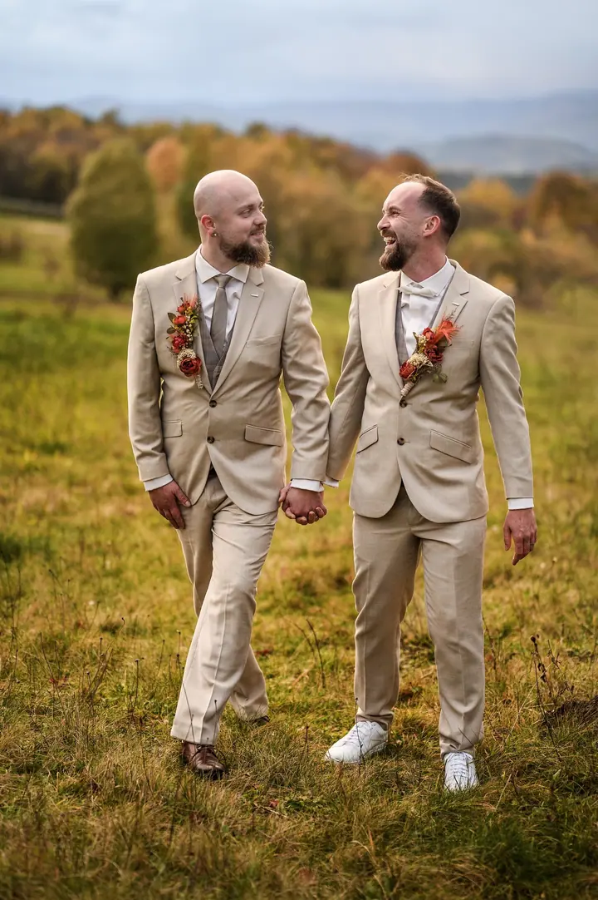

jedna
Svatební reportáž
Fotím celý svatební den jako jeden příběh, od příprav a detailů přes obřad až po večerní zábavu. Reportážní fotky vám nejvíc připomenou, jak jste ten den prožili.

Svatební fotograf · Český Těšín, Třinec, Moravskoslezský kraj

Jmenuji se Lukáš Zabystrzan a fotím svatby v Českém Těšíně, Třinci a okolí. Sám sebe označuji jako vypravěče svatebních příběhů, protože váš den nefotím jako sadu póz, ale jako příběh, který si budete chtít pouštět znovu a znovu.
Více o mně
Co fotím
jedna
Fotím celý svatební den jako jeden příběh, od příprav a detailů přes obřad až po večerní zábavu. Reportážní fotky vám nejvíc připomenou, jak jste ten den prožili.
dvě
Během svatebního dne si spolu odskočíme na chvíli jen pro vás dva. Nemusíte umět pózovat, stačí být spolu a já vás nenásilně navedu.

Každá svatba má svůj vlastní příběh.


Za objektivem
Jsem svatební fotograf z Těšínska a nejraději fotím reportáž. Do ní se totiž propíše nejvíc z toho, co jste ten den prožili: nervozita při přípravách, slzy u obřadu, smích u stolu i tanec do noci.
Spousta párů mi před svatbou říká, že neumí stát před foťákem a neví, jak se tvářit. Nevadí to. Snažím se do dne zapadnout co nejpřirozeněji, s klidem a s humorem, a když je potřeba, nenásilně vás navedu. Ostatně mnozí mi po svatbě neřeknou jinak než Luky.
Fotím barevně i černobíle, při západu slunce na loukách i večer na parketu. Věřím, že fotografie je uchování okamžiku, který je v budoucnu klíčem k minulosti. Pokud plánujete svatbu, neváhejte se zeptat na váš termín.
Lukáš
Napište nebo zavolejte a já vám ověřím, jestli mám váš svatební den volný.
Probereme, jak si svatbu představujete, kde se bude konat a na čem vám záleží, abyste se se mnou cítili dobře už od začátku.
Provázím vás celým dnem, fotím reportáž, detaily i vaše společné portréty. Vy si den užíváte, já vypravuji jeho příběh.
Fotky pečlivě vyberu a upravím, abyste se do svatebního dne mohli kdykoli vrátit.
Portfolio
Fotografie jsou ilustrační
Otázky
Vůbec ne. S tímhle obavou za mnou chodí většina párů. Většinu dne fotím nenápadně reportážně a u portrétů vás navedu tak, abyste se cítili přirozeně.
Hlavně v Českém Těšíně, Třinci a okolí v Moravskoslezském kraji. Pokud se berete jinde, napište mi a domluvíme se.
Ano, rád. Ukázky najdete přímo v portfoliu.
Cenu vám rád připravím podle rozsahu dne. Nejdřív se mi ozvěte s datem a místem svatby, ověřím volný termín a domluvíme podrobnosti.

Napište pár vět o tom, co si představujete. · +420 777 090 529